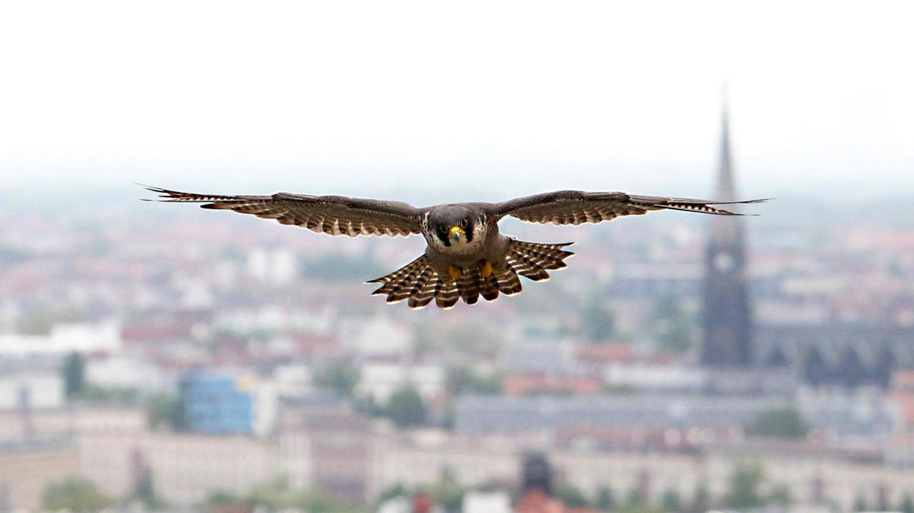
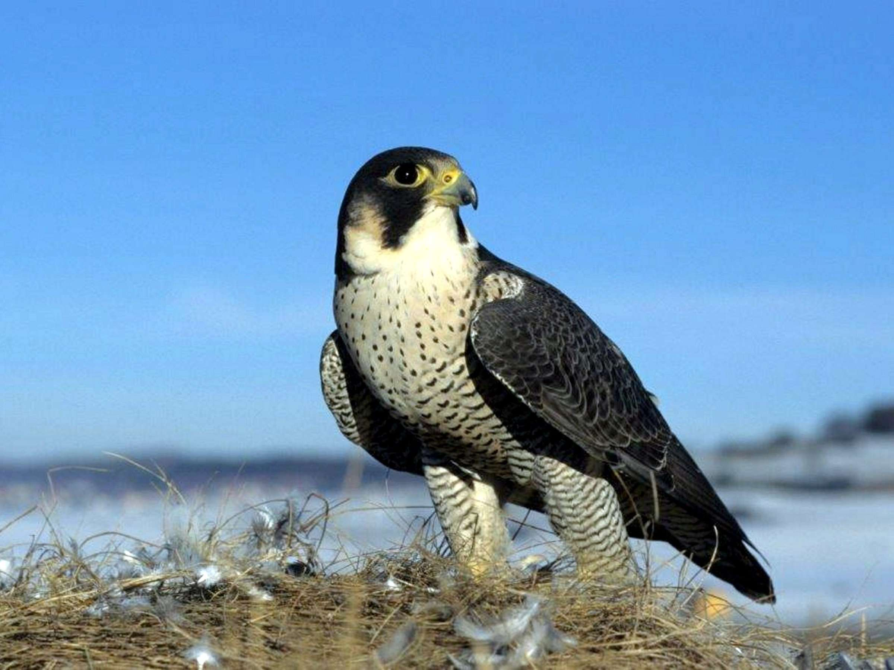
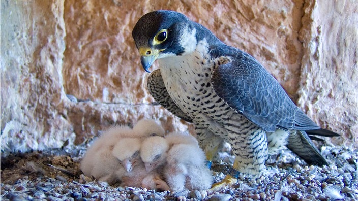

Wanderfalke
| Größe | 35-51 cm (Spannweite 79-114 cm) |
| Geschwindigkeit | bis 322 km/h (Sturzflug) |
| Maße | Kopf-Rumpflänge: 90–150 cm Schulterhöhe: 55–120 cm Gewicht: 20–80 kg |
| Gewicht | 550-1300 g |
| Lebensdauer | 15-18 Jahre |
| Nahrung | Vögel |
| Feinde | Raubtiere, andere Greifvögel |
| Lebensraum | weltweit |
| Ordnung | Falkenartige |
| Familie | Falkenartige |
| Merkmale | schnellster Vogel der Welt |
Ernährung
Auf dem Speiseplan des Wanderfalken stehen fast
ausschließlich andere Vögel, die er in der Luft erbeutet. In
Stadtnähe ernährt er sich zu einem Großteil von Tauben,
wohingegen er sich in der Nähe von Gewässern viel von
Enten und Lemikolen ernährt.
Verhalten
Wanderfalken halten entweder von einer
erhöhten Sitzwarte oder im Flug Ausschau nach ihrer Beute.
Dabei nutzen sie in erster Linie ihren scharfen Sehsinn.
Ihr Opfer erbeuten sie, indem sie sich aus großer Entfernung im Sturzflug darauf stürzen.
Etwa 13 Prozent dieser Manöver sind erfolgreich.
Körperbau
Das Gefieder des Wanderfalken ist charakteristisch schiefergrau an
der Oberseite und weiß mit einer dunklen Querbänderung an der Unterseite.
Der Kopf ist dunkel gefärbt, die Kehle und die Wangen hingegen sind weiß.
Aussehen
Das Gefieder des Wanderfalken ist charakteristisch
schiefergrau an der Oberseite und weiß mit einer dunklen
Querbänderung an der Unterseite. Der Kopf ist dunkel
gefärbt, die Kehle und die Wangen hingegen sind weiß.
Das Gefieder des Wanderfalken ist charakteristisch schiefergrau an
der Oberseite und weiß mit einer dunklen Querbänderung an der Unterseite.
Der Kopf ist dunkel gefärbt, die Kehle und die Wangen hingegen sind weiß.
Aussehen
Das Gefieder des Wanderfalken ist charakteristisch
schiefergrau an der Oberseite und weiß mit einer dunklen
Querbänderung an der Unterseite. Der Kopf ist dunkel
gefärbt, die Kehle und die Wangen hingegen sind weiß.
Zugverhalten
Hierzulande sind Altvögel häufig Standvögel. Jungvögel
ziehen teilweise in wärmere Regionen. Nordeuropäische
Populationen sind häufig Zugvögel, die im Winter
nach Mittel- und Westeuropa ziehen.
Lebensraum
Er besiedelt stark variierende Lebensräume und
brütet in Waldgebieten und an steilen Felswänden, aber auch in
Kirchtürmen oder an Brückenpfeilern. Zur Jagd
benötigt er jedoch große freie Flächen.



Hierzulande sind Altvögel häufig Standvögel. Jungvögel
ziehen teilweise in wärmere Regionen. Nordeuropäische
Populationen sind häufig Zugvögel, die im Winter
nach Mittel- und Westeuropa ziehen.
Lebensraum
Er besiedelt stark variierende Lebensräume und
brütet in Waldgebieten und an steilen Felswänden, aber auch in
Kirchtürmen oder an Brückenpfeilern. Zur Jagd
benötigt er jedoch große freie Flächen.